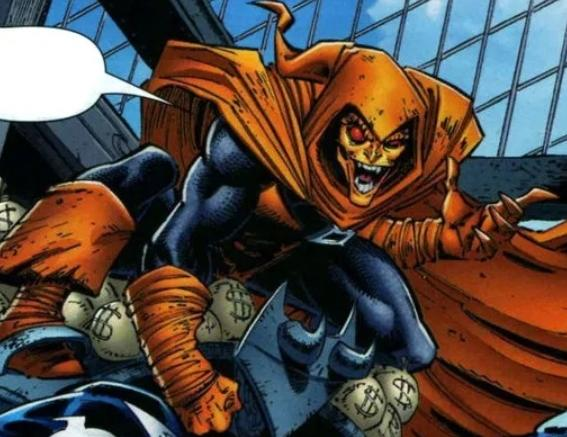
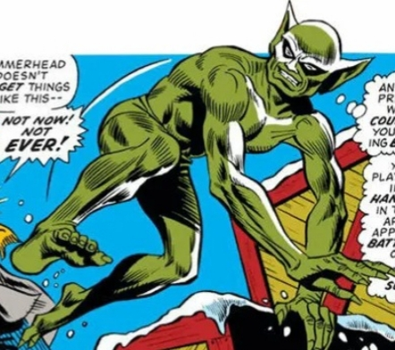
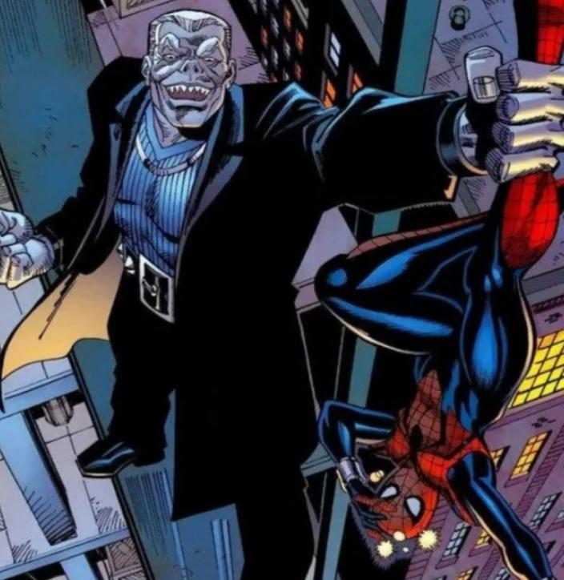
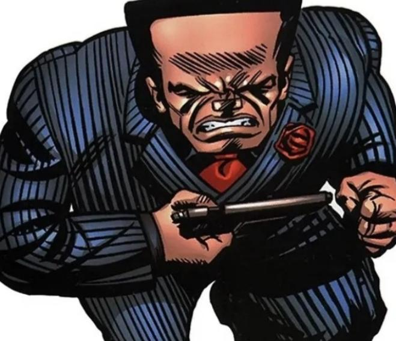
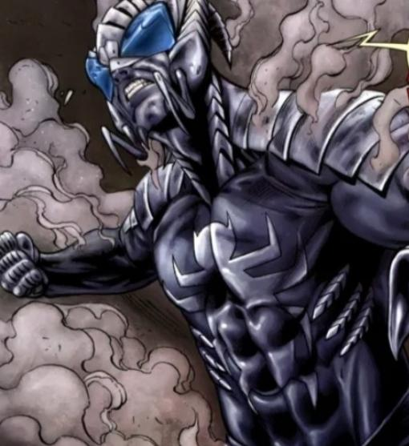
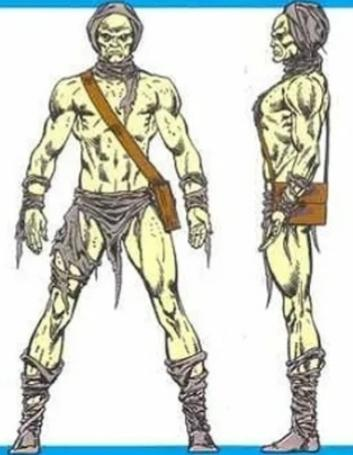
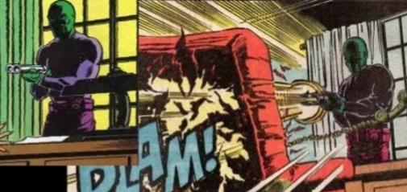
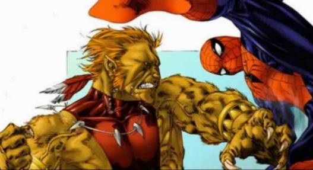
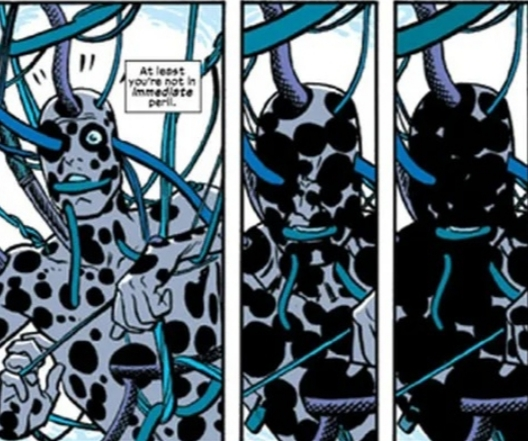
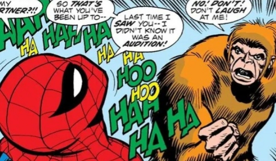

El Duende (no confundir con El Duende Verde) es uno de los villanos más importantes y protagonistas
de la historia de Spider-Man. Para que os hagáis una idea, hasta seis personajes diferentes
han dado vida a este icónico enemigo del Trepamuros; a saber: Roderick Kingsley, Arnold Donovan,
Ned Leeds, Jason Macendale, Daniel Kingsley e incluso el mismísimo Phil Urich. Su origen data de
1983 y viene de la mano de la etapa de Roger Stern con John Romita Jr., aunque la cantidad total de
iteraciones que ha tenido hacen que su historia sea densa y, prácticamente, inabordable en este post.
Pero, para que sepáis de qué clase de villano estamos hablando, El Duende está considerado como el
villano número 57 en la lista de mejores villanos de todos los tiempos en los cómics.
Si lo colocamos al inicio de esta lista es, precisamente, por la confusión que puede generar su
identidad con la del famoso Duende Verde arácnido.

El Chacal,conocido también como el profesor Miles Warren, la parte humana del personaje fue creada por Stan Lee y Steve Ditko en 1965
y el sobrenombre de El Chacal se lo otorgaron Gerry Conway y Ross Andru nueve años después. Además de un genio en el campo
de la genética, la bioquímica, la ingeniería y la clonación, Miles Warren era un tipo sospechoso, un docente intenso e intrigante
con obsesiones de manipulación. Sus dotes atléticas previas le sirvieron para, una vez convertido en El Chacal, sacar todo el potencial
a esos atributos físicos superhumanos. Sin lugar a dudas, la figura de El Chacal en el Universo Spider-Man después de la famosa Saga del
Clon se potenció considerablemente hasta hacer que este personaje, poco conocido para los amantes de las películas,
sea uno de los grandes villanos del Hombre Araña en las viñetas.

Lápida también conocido como Lonnie Thompson Lincoln, Lápida fue creado el 36 de marzo de 1988 para la serie Web of
Spider-Man que escribía Gerry Conway y dibujaba Alex Saviuk. Fuerte, poderoso, duro, resistente
Lápida es un villano muy interesante porque, a pesar de sus dotes superhumanas, siempre ha estado más ligado al mundo del hampa criminal que
al ir en solitario o en otras agrupaciones de supervillanos como otros enemigos famosos del Trepamuros. Asociado solamente a La Mano y a los Doce Siniestros
en algunas ocasiones, Lonnie Thompson Lincoln ha tenido su popularidad en las series de animación de Spider-Man y en la película animada de Un nuevo universo,
aunque nunca ha tenido la importancia adecuada para que la gente lo conozca.

Cabeza de Martillo también conocido como Joseph (Harrow o Guverleph), Cabeza de Martillo fue creado en octubre de 1972 para las páginas de
The Amazing Spider-Man por el escritor Gerry Conway y el dibujante John Romita Sr. A diferencia de otros, Cabeza de Martillo no tiene ningún
superpoder, pero su pseudónimo le viene de ese cráneo que fue sustituido por una aleación de adamantium irrompible. Antiguo pistolero venido
a profesional criminal y, finalmente, capo de la mafia, fue líder de la familia criminal Hammerhead, una rama del hampa de la Maggia en Nueva York.
Sin lugar a dudas, Joseph es uno de los grandes mafiosos del Universo Marvel, a pesar de su poca fama.

Mata-Arañas también conocido como Alistair Smythe, Mata-Arañas fue creado por Louis Simonson y Mary Wilshair para el número 19 de
Amazing Spider-Man Annual. Ligado a la inevitable figura de J. Jonah Jameson por la creación de esas cuerpos robóticos para combatir a Peter Parker,
Alistair es un genio de la robótica, la cibernética y la genética. No es uno de esos villanos que esperas ver, por ejemplo, en la gran pantalla,
sin el arco argumental de J. Jonah Jameson como alcalde de New York, el desarrollo de los Mata-Arañas y la profundización en el personaje de Alistair;
pero, como curiosidad, este villano del Trepamuros ya apareció en The Amazing Spider-Man 2: El poder de Electro, interpretado por el actor B.J Novak
¡Era el supervisor desagradable de Max Dillon en Oscorp!.

Carroña el clon de Miles Warren (El Chacal) conocido como Carroña salió a la luz en el número 25 de The Spectacular Spider-Man,
gracias al esfuerzo creativo de Bill Mantlo, Jim Mooney y Frank Springer. Resultado de una secuela directa de la Saga del Clon, más tarde este clon
de Miles Warren pasó el testigo a Malcolm McBride y, posteriormente, a William Allen. De entre todas su características, además de ese aspecto terrorífico
que posee, cuenta con telepatía, fuerza sobrehumana, telequinesis, levitación y un largo etcétera de superpoderes. ¿Cómo no vamos a tener en cuenta a un tipo
que es capaz de descomponer toda la materia orgánica que pasa por sus manos?.

Comepecados conocido como Stanley Carter en sus orígenes, en su primera aparición en 1985 de la mano de Peter David y Rich Buckler,
Comepecados es uno de esos terribles personajes que salen a la luz por culpa de los ficticios experimentos provocados por una situación
de tensión como la Guerra Fría. Stanley era un agente de SHIELD al que le inyectaron una serie de medicamentos para convertirlo en una especie
de superhombre, pero el resultado hizo que se convirtiera en alguien violento y abandonó la organización paramilitar para formar parte del Departamento
de Policía de Nueva York. Allí, vio morir a su compañero y se obsesionó con buscar venganza para terminar convirtiéndose en un villano. Más tarde,
Michael Engelschwert seguiría sus pasos en ese delirio denominado Comepecados.

El Puma también conocido como Thomas Fireheart, El Puma es uno de esos personajes ambiguos que campan a sus anchas por el Universo Marvel,
ya que partió como villano pero llegó a ganarse el respeto del superhéroe arácnido e incluso a hacer tándem con él en alguna ocasión. Su aparición está
fechada en septiembre de 1984, cuando Tom DeFalco y Ron Frenz lo presentaron en las páginas del número 256 de The Amazing Spider-Man. Descendiente de los
pueblos nativos americanos, en particular de la tribu Kisani, mezcla la ficción con las leyendas y hace que este Thomas Fireheart, cuando invoca la figura del
Puma, obtenga superpoderes como sentidos, fuerza y velocidad sobrehumanas, además de unas excelentes garras y unos gigantescos colmillos que lo convierten en
un enemigo feroz y peligroso. Sumado al hecho de su experiencia en artes marciales en su forma humana, El Puma es uno de esos personajes que ha hecho sudar
la gota gorda a nuestro querido Peter Parker y por eso merece estar aquí.

La Mancha también conocido como el doctor Jonathan Ohn, La Mancha fue creado por Al Milgrom y Herb Trimpe en 1984 para las páginas de Spectacular Spider-Man.
Aunque puede parecer algo ridículo visto en acción, la capacidad de La Mancha de crear portales interdimensionales y de moverse en el espacio con suma
facilidad es un poder realmente práctico. La Mancha ha pertenecido a La Mano, a los 11 MODOK e incluso a los Seis Siniestros. A pesar de la diversión que
causa verle hacer lo suyo, Jonathan Ohn no sólo ha sido villano de Spider-Man, sino que también se las ha visto con el mismísimo Daredevil cara a cara.

Gibón también conocido como Martin Blank, El Gibón surgió en las viñetas de "The Amazing Spider-Man· en julio de 1972, gracias al tándem creativo formado por
Stan Lee y John Romita Sr. A pesar de ser un mutante y de contar con muchísimas habilidades (fuerza, velocidad, agilidad, reflejos), Martin Blank nunca
encontró su espacio en el mundo y siempre formó parte de una subcategoría de perdedores tanto en el mundo criminal como en la sociedad en sí. Afiliado a
aquellos divertidos Ape-Vengers y a la sincera Legión de los Perdedores, Gibón tuvo finalmente su gran momento en la historia de Spider-Man y lo hizo recientemente,
de la mano de Nick Spencer y con un final que dejó a más de uno helado en la "Saga de Cazado". Será difícil olvidar al Gibón después de aquello.